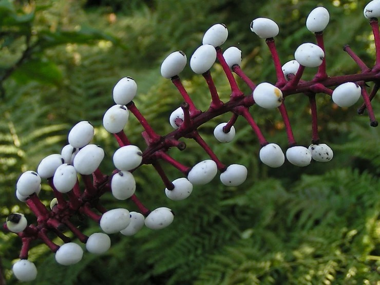

Actea pachipoda
Se trata de una planta floral norteamericana que alcanza los 50cm de altura. Sus flores, de color blanco, se producen en diminutos racimos. Además, esta especie genera la drupa, un fruto parecido a un globo ocular, por lo que también recibe el nombre de ‘ojo de muñeca’.
Sin embargo, esta apariencia inofensiva encuentra su doble cara en el veneno que se encuentra en sus frutos. Se ha catalogado como tóxica para el ser humano, aunque en algunas culturas se utiliza como antídoto al veneno de algunas serpientes.
